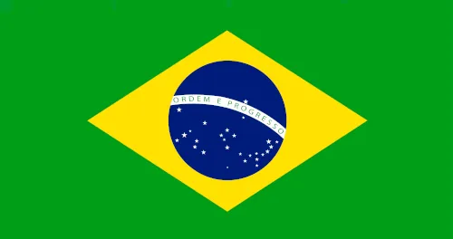

My name is Kelvyn. I was born in Brazil. I'm currently working as a teacher supervisor at InField Preach My Gospel Training. I love hiking and having new experiences.
About Me
Brazil

Brazil, officially the Federative Republic of Brazil, is the largest and easternmost country in South America and in Latin America. Brazil is the world's fifth-largest country by area and the seventh most populous. Its capital is Brasília, and its most populous city is São Paulo. The federation is composed of the union of the 26 states and the Federal District. It is the only country in the Americas to have Portuguese as an official language. Brazil is one of the most multicultural and ethnically diverse nations, due to over a century of mass immigration from around the world.